| SL no | Content | Page no |
|---|---|---|
| 1 | INTRODUCTION | 3-8 |
| 1.1 | Brief introduction about the project | 3 |
| 1.2 | Project Background | 4 |
| 1.3 | Basic Design Principles of the Project | 5-6 |
| 1.4 | Basic Architecture of the Project | 7-8 |
| 2 | SYSTEM STUDY AND ANALYSIS | 9-14 |
| 2.1 | Existing System | 9 |
| 2.2 | Proposed System | 10 |
| 2.3 | Drawbacks of the Existing System | 11 |
| 2.4 | Feasibility Study | 11-12 |
| 2.5 | Project Planning | 12-13 |
| 2.6 | Requirement Specification | 14 |
| 3 | SYSTEM WORKFLOW | 15-17 |
| 3.1 | Design Methodology | 15 |
| 3.2 | Architecture Diagram | 16 |
| 3.3 | UML Diagrams | 17 |
| 4 | AGILE TECHNOLOGY OVERVIEW | 18-25 |
| 4.1 | Introduction to Scrum | 18-19 |
| 4.2 | Principles or methodology used | 19-20 |
| 4.3 | Product Backlog | 21 |
| 4.4 | Sprint Planner | 22-24 |
| 4.5 | Ideal Burndown Chart | 25 |
| 5 | SYSTEM DESIGN | 26-28 |
| 5.1 | Technology / Framework [Edge AI + Agentic Workflows] | 26-27 |
| 5.2 | Module Description | 27-28 |
| 6 | CODING | 29-49 |
| 6.1 | Coding standards used in the project | 29-31 |
| 6.2 | Project coding | 31-49 |
| 7 | TESTING | 50-51 |
| 7.1 | Unit Testing | 50-51 |
| 8 | IMPLEMENTATION | 52-55 |
| 8.1 | Implementation method used in the project | 52-55 |
| 9 | BUSINESS PERSPECTIVE | 56-57 |
| 10 | FUTURE SCOPE OR ENHANCEMENTS | 58-61 |
| 11 | APPENDIX | 62-68 |
| 11.1 | Git History [sprint wise] | 62-63 |
| 11.2 | Screenshots of Forms, Reports, Diagrams | 64-67 |
| 11.3 | Burndown Charts | 68 |
| 12 | REFERENCES / BIBLIOGRAPHY | 69-71 |
The project titled "Hyper-Localized Multilingual Voice Assistant" is a full-stack AI system designed to enable seamless interaction with digital services using natural voice commands in regional Indian languages. Built on edge computing hardware (Raspberry Pi 5) and powered by agentic AI workflows (LangGraph), it serves as a unified platform for voice-based information retrieval, task management, and conversational interaction in 11 Indian languages.
The application is built using a modular Python backend with FastAPI as the web framework, providing both REST API endpoints and WebSocket support for real-time streaming. The AI pipeline integrates multiple state-of-the-art models: OpenAI Whisper and Meta MMS for automatic speech recognition (ASR), AI4Bharat IndicTrans2 for bidirectional translation between Indian languages and English, Qwen 2.5 Instruct as the local large language model (LLM), and Meta MMS-TTS for text-to-speech synthesis.
For intelligent task routing, the system employs a LangGraph-based agent orchestrator that classifies user intent and routes queries to specialized agents: an Info Agent with web search capabilities, a Task Agent for reminders and to-do management, and a Chat Agent for general conversation.
A React + TypeScript dashboard provides real-time monitoring of conversations, system health, performance metrics, and an interactive "Try It" panel for testing voice interactions directly from the browser.
Key Highlights:
India's linguistic diversity — with 22 officially recognized languages and over 19,500 dialects — presents a unique challenge for voice technology. According to the 2011 Census, only about 10% of India's population speaks English, yet the majority of voice assistant technology is optimized primarily for English. This creates a massive digital accessibility gap, particularly in rural and semi-urban areas where regional languages dominate daily communication.
The primary motivation behind the development of this Hyper-Localized Multilingual Voice Assistant is to directly address this language barrier by building a voice-first interface that natively supports Indian languages. The project is conceived as a comprehensive AI ecosystem that operates at the edge. By utilizing offline-capable models running on a Raspberry Pi 5, the system ensures accessibility even in areas with poor or no internet connectivity.
The core objective is to transition the user experience from an English-dependent, cloud-only model to a multilingual, edge-first model that respects linguistic diversity. The system transforms voice commands in languages like Malayalam, Hindi, Tamil, and Telugu into actionable responses — performing tasks such as information retrieval, task management, and general conversation.
Furthermore, the project provides developers and researchers with a monitoring dashboard and a modular pipeline architecture. The LangGraph-based agent orchestrator enables intelligent routing of user queries to specialized agents (information, task management, conversation), while the comprehensive testing suite and benchmarking tools ensure reliability and performance optimization.
Repository Overview:
The project repository contains:
src/ – All core modules: ASR, TTS, translation, LLM, agents, pipeline, API, and edge clientfrontend/ – React 18 + TypeScript dashboard with Radix UI componentsconfig/ – YAML-based configuration files for server and edge profilestests/ – Comprehensive pytest test suite covering all modulesscripts/ – Demo, benchmarking, and seeding utilitiesdocs/ – Scrum documentation, sprint plans, and architecture diagramsPurpose and Impact:
By building on modern ML technologies like Whisper, IndicTrans2, Qwen 2.5, and LangGraph, this voice assistant demonstrates that high-quality, multilingual voice interaction can be achieved entirely on edge hardware. The system serves as both a production-ready prototype and a research platform for edge AI deployment in linguistically diverse regions.
The design of this Hyper-Localized Multilingual Voice Assistant follows a set of foundational principles that ensure the system is maintainable, scalable, and optimized for edge deployment:
1. Modularity and Separation of Concerns
Each component of the voice pipeline (ASR, Translation, NLU, LLM, TTS) is implemented as an independent module with well-defined interfaces. This allows any component to be swapped, upgraded, or configured independently without affecting the rest of the pipeline. For example, the ASR engine can be switched between Whisper, MMS, and Pingala via a single configuration change.
2. Edge-First Architecture
The system is designed from the ground up to run on resource-constrained hardware (Raspberry Pi 5 with 4-8GB RAM). All model selections, quantization strategies, and caching mechanisms are optimized for edge deployment. The llama.cpp backend enables running quantized LLM models (Q4_K_M, Q8_0) with minimal memory footprint.
3. Type Safety and Configuration-Driven Design
The entire system is configured through YAML files (config/settings.yaml) with typed dataclass loaders, ensuring type safety at the configuration boundary. Python type hints and Pydantic models are used throughout for API validation and data contracts.
4. Secure by Default
Audio data is processed locally on the edge device; no user data leaves the local network unless explicitly configured. CORS policies, input validation, and file upload restrictions are enforced at the API layer. Environment variables manage sensitive configuration such as API keys.
5. Performance and Latency Optimization
Multiple strategies are employed to minimize end-to-end latency: model quantization (INT8, Q4_K_M), LRU response caching with TTL, lazy model loading, GPU acceleration (CUDA) where available, and the Pipecat streaming framework for real-time audio processing.
6. Reliability and Graceful Degradation
Each component implements fallback mechanisms. If the primary ASR (MMS) fails, Whisper is used as a fallback. If the LLM is unavailable, pre-generated contextual responses are returned. The agent orchestrator falls back to simple sequential processing if LangGraph encounters errors.
7. Observability and Monitoring
Every pipeline execution is logged with detailed timing metrics (ASR time, translation time, LLM time, TTS time, total time). The React dashboard provides real-time visibility into system health, conversation logs, and performance breakdowns.
8. Accessibility and Multilingual Support
The system supports 11 Indian languages with full bidirectional translation. The TTS engine produces natural-sounding speech in each supported language. Language detection is automatic, and the system adapts its response language to match the user's input language.
9. Agile and Iterative Development
The project follows Scrum methodology with six defined sprints, each delivering a working increment of the system. Sprint retrospectives and burndown charts track progress and inform prioritization decisions.
10. Testing and Quality Assurance
A comprehensive test suite using pytest covers unit tests, integration tests, and API endpoint tests. Code quality is enforced through Black (formatting), Ruff (linting), and type checking. Test coverage targets >80% across all modules.
The system follows a three-tier architecture that cleanly separates the edge device, processing server, and presentation layers:
1. Edge Tier (Raspberry Pi 5)
2. Processing Tier (FastAPI Server)
/api/transcribe, /api/process, /api/text, /api/tts/ws, /ws/stream for real-time audio streaming3. Presentation Tier (React Dashboard)
4. API Layer (FastAPI Route Handlers)
src/api/main.py with Pydantic request/response modelspython-multipart for audio file processing5. Database Layer
conversations, messages, tasks, system_metricssrc/db/models.py6. Agent System (LangGraph)
7. Configuration System
config/settings.yaml (server), config/edge_profile.yaml (RPi)src/config.py with environment variable overrides8. Deployment
/health endpoint with auto-restart policy9. Typical Request Lifecycle
The existing landscape of voice assistants — dominated by Amazon Alexa, Google Assistant, Apple Siri, and Microsoft Cortana — relies almost entirely on cloud-based processing with limited support for Indian languages. These systems were primarily designed for English-speaking markets and have been incrementally extended to support a few Indian languages with varying degrees of accuracy.
In the current setup, voice commands are captured by smart speakers or phones and transmitted to centralized cloud servers for processing. The audio is transcribed using proprietary ASR models, processed by NLU/NLP engines, and responses are generated and synthesized on cloud infrastructure before being sent back to the device. This architecture requires constant, high-bandwidth internet connectivity.
For Indian language speakers, the experience is significantly degraded. ASR accuracy for languages like Malayalam, Tamil, and Telugu drops substantially compared to English. Translation quality is inconsistent, and the systems often fail to understand regional accents, colloquialisms, and code-switching patterns common in Indian conversations. Furthermore, there are no open-source, edge-deployable alternatives that provide a complete voice assistant pipeline for Indian languages.
Voice-related data — including audio recordings, transcriptions, and conversation logs — is stored on remote cloud servers without user control, raising significant privacy and data sovereignty concerns.
The proposed Hyper-Localized Multilingual Voice Assistant addresses every limitation of the existing systems through a comprehensive, open-source architecture designed specifically for Indian languages and edge deployment:
The main features include real-time voice-to-voice interaction in regional languages, intelligent query routing through agentic workflows, task and reminder management, web search capabilities, comprehensive performance monitoring, and a responsive dashboard for system management. The platform is fully self-contained, allowing deployment in environments without internet connectivity.
This proposed system overcomes the limitations of the cloud-dependent approach by bringing AI inference to the edge, supporting a wide range of Indian languages, and providing transparent, monitorable operation through the dashboard interface.
Technical Feasibility
The project leverages mature, proven open-source technologies: PyTorch and Transformers for model inference, FastAPI for the web server, React for the dashboard, and LangGraph for agent orchestration. All selected models (Whisper, IndicTrans2, Qwen 2.5, MMS-TTS) have been validated for Indian language support and can run on consumer hardware with appropriate quantization.
Economic Feasibility
The project utilizes entirely open-source frameworks, models, and free development tools. The hardware cost is limited to a Raspberry Pi 5 ($60-80) with USB microphone and speaker ($20-30). There are no recurring cloud compute costs since all inference runs locally. The total hardware cost of approximately $100 is significantly lower than any commercial voice assistant deployment.
Operational Feasibility
The system is designed for minimal operational overhead. Configuration is centralized in YAML files, the dashboard provides real-time monitoring, and Docker Compose enables one-command deployment. The system auto-recovers from component failures through graceful degradation and fallback mechanisms.
Schedule Feasibility
The development timeline of 12 weeks (6 sprints) is realistic given the use of pre-trained models that require only integration (not training from scratch) and modern frameworks that simplify API development and deployment.
Legal and Environmental Feasibility
All models used are open-source with permissive licenses (Apache 2.0, MIT). Audio data is processed locally, ensuring compliance with data protection regulations. The edge deployment approach has minimal environmental impact compared to cloud-based alternatives.
The development of the Hyper-Localized Multilingual Voice Assistant is organized into six sequential sprints, covering research, development, integration, deployment, and testing:
Phase 1: Research and Foundation (Sprint 1 — Weeks 1-2)
Phase 2: Core Component Integration (Sprint 2 — Weeks 3-4)
Phase 3: Pipeline and API (Sprint 3 — Weeks 5-6)
Phase 4: Agent Framework (Sprint 4 — Weeks 7-8)
Phase 5: Edge Deployment (Sprint 5 — Weeks 9-10)
Phase 6: Testing, Documentation, and Release (Sprint 6 — Weeks 11-12)
| Category | Specification |
|---|---|
| Processor | Intel Core i5 / AMD Ryzen 5 or higher (GPU: NVIDIA with CUDA recommended) |
| RAM | 16 GB or higher (8 GB minimum for CPU-only inference) |
| Storage | 20-40 GB free SSD space (models, venv, data) |
| Operating System | Ubuntu 20.04+, Windows 10/11, or Raspberry Pi OS |
| Network | Optional — system designed for offline operation |
| Programming Language | Python 3.10+ (primary), TypeScript (frontend) |
| Framework | FastAPI (backend), React 18 (frontend), PyTorch (ML) |
| Edge Hardware | Raspberry Pi 5 (BCM2712 Cortex-A76, 4-8GB RAM) |
| Text Editor/IDE | Visual Studio Code, Cursor |
Hardware Requirements
| Requirement | Details |
|---|---|
| Development Machine | Intel i5+/AMD Ryzen 5+ with 16GB RAM and NVIDIA GPU (CUDA) |
| Edge Device | Raspberry Pi 5 (4GB/8GB RAM variant) |
| Audio Input | USB microphone (16kHz sampling rate recommended) |
| Audio Output | 3.5mm speaker or USB audio output |
| Storage | 32GB+ microSD card (Class 10) for Raspberry Pi |
| Network | Optional WiFi/Ethernet — system works offline |
Software Requirements
| Requirement | Details |
|---|---|
| Python Runtime | Python 3.10+ with pip package manager |
| ML Framework | PyTorch >= 2.1.0, Transformers >= 4.36.0 |
| Web Framework | FastAPI >= 0.108.0, Uvicorn >= 0.25.0 |
| Agent Framework | LangChain >= 0.1.0, LangGraph >= 0.0.20 |
| Frontend | Node.js 18+, React 18, TypeScript 5.x, Vite |
| Database | SQLite 3 (built-in, WAL mode) |
| Containerization | Docker, Docker Compose (optional) |
| Code Quality | Black (formatter), Ruff (linter), pytest (testing) |
Network Connectivity
| Requirement | Details |
|---|---|
| Internet | Optional — required only for web search (Info Agent) and initial model downloads |
| Local Network | WiFi/Ethernet for edge device ↔ server communication |
| Edge Deployment | Self-contained operation without external connectivity |
| API Access | Optional Cartesia API key for online TTS, optional Anthropic/OpenAI keys for cloud LLM |
The Hyper-Localized Multilingual Voice Assistant follows a modular pipeline architecture where each stage of voice processing is handled by a specialized component. The system is built using Python (FastAPI) as the processing server and React as the dashboard interface.
Workflow Description
1. Audio Capture
2. Speech Recognition (ASR)
3. Translation and Processing
4. Response Generation
5. Logging and Monitoring
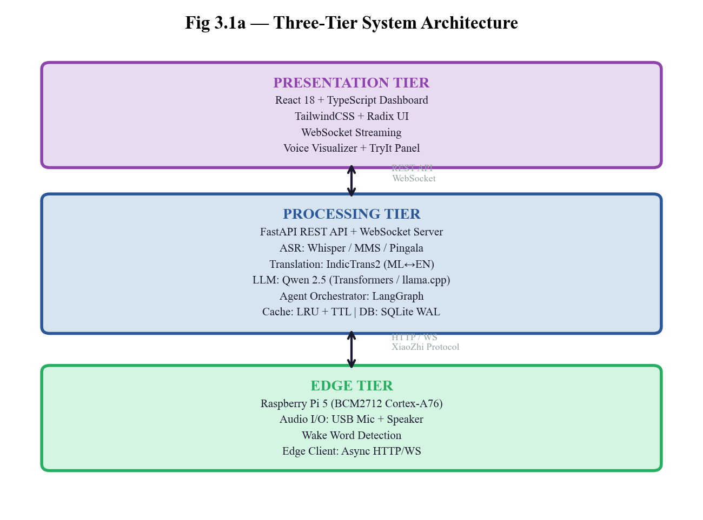
Fig 3.1 — Three-Tier System Architecture
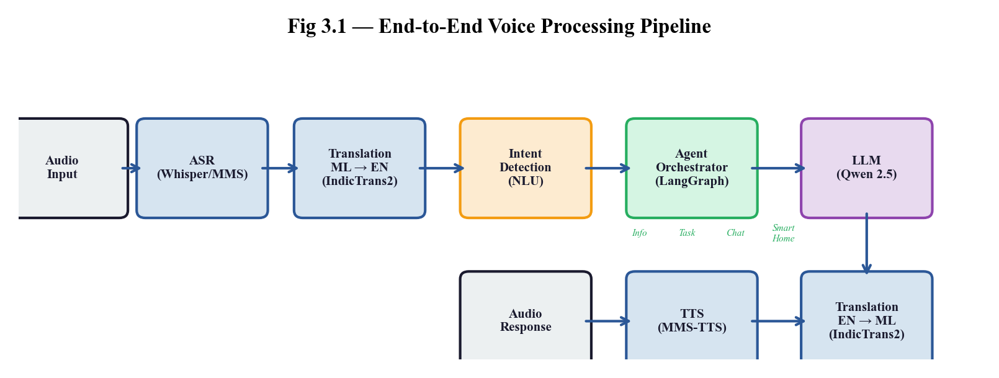
Fig 3.2 — End-to-End Voice Processing Pipeline
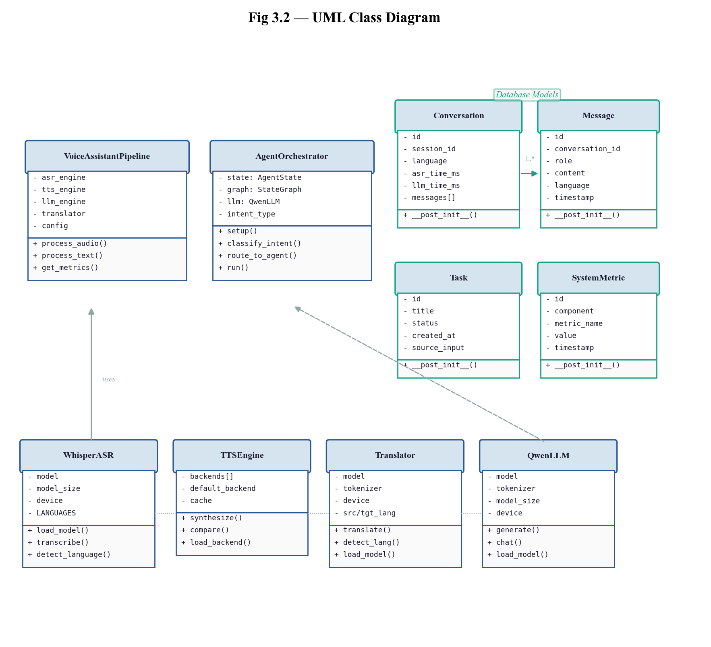
Fig 3.3 — UML Class Diagram
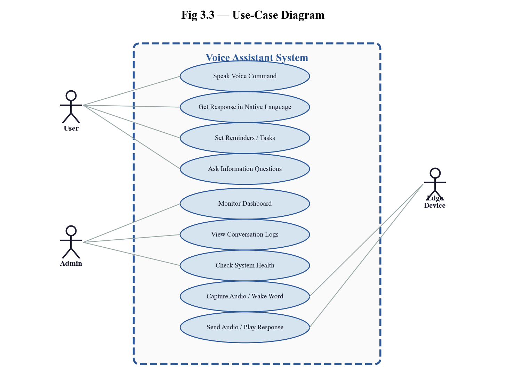
Fig 3.4 — Use Case Diagram
Agile technology refers to a set of principles and practices for software development that prioritize flexibility, collaboration, and rapid delivery. It emphasizes iterative development, continuous user feedback, and adaptability to changing requirements, rather than following a strict, linear process like traditional waterfall methodologies. Agile encourages a collaborative, cross-functional team approach, where each member contributes to both the development and ongoing improvement of the system throughout its lifecycle.
The Agile methodology is built around several key principles:
The Scrum framework is based on fixed-length iterations called Sprints, which last 2 weeks each (6 sprints total, 12 weeks). Each Sprint results in a potentially shippable product increment.
Roles in Scrum:
Key Artifacts in Scrum:
Scrum Ceremonies:
Scrum follows a set of core principles that align with Agile's values but are more specific to the Scrum framework itself:
Methodology applied in this project:
| Sl.No | User Story | Est. Hours | Priority |
|---|---|---|---|
| 1 | As a user, I want my Malayalam speech transcribed to text so that the system understands me (ASR integration with >85% accuracy) | 15 | Critical |
| 2 | As a user, I want my Malayalam speech translated to English so that the LLM can process it (IndicTrans2 ML→EN with >90% accuracy) | 15 | Critical |
| 3 | As a user, I want the assistant to understand and respond to my queries intelligently (Qwen 2.5 LLM with <500ms generation) | 18 | Critical |
| 4 | As a user, I want to hear responses in natural Malayalam speech (MMS-TTS with clear pronunciation and <400ms latency) | 12 | Critical |
| 5 | As a user, I want to speak and get spoken responses end-to-end with <3 second total latency | 21 | High |
| 6 | As a user, I want the assistant to perform tasks using intelligent agents (LangGraph with 3+ agent types) | 18 | High |
| 7 | As a user, I want the assistant to run on Raspberry Pi 5 for offline operation | 18 | High |
| 8 | As a developer, I want comprehensive tests, benchmarks, and documentation | 17 | Medium |
| Backlog Item | Sprint ID | Sprint Task | Sprint Goal | Est. Hours | Acceptance Criteria |
|---|---|---|---|---|---|
| Research & Setup | 1.1 | Research ASR, TTS, LLM options; compare Whisper vs MMS vs IndicASR | Select optimal technology stack for Indian language support | 8 | Comparison document created; decisions documented with benchmarks |
| 1.2 | Design system architecture; define component interfaces and data flow | Establish foundation for modular development | 5 | Architecture diagram complete; API contracts defined | |
| ASR PoC | 1.3 | Implement Whisper ASR wrapper; test with Malayalam audio samples | Validate ASR accuracy for primary language | 5 | Whisper integrated; >85% accuracy on test set |
| TTS PoC | 1.4 | Implement MMS-TTS wrapper; compare with Cartesia TTS quality | Select best TTS for Malayalam | 3 | Both TTS compared; quality assessment documented |
| Backlog Item | Sprint ID | Sprint Task | Sprint Goal | Est. Hours | Acceptance Criteria |
|---|---|---|---|---|---|
| Translation | 2.1 | Setup IndicTrans2 ML→EN and EN→ML models; create translation wrapper API | Enable bidirectional Malayalam↔English translation | 8 | Both directions working; >90% accuracy; <200ms latency |
| LLM | 2.2 | Download Qwen 2.5 1.5B; implement chat wrapper with conversation memory | Enable intelligent conversational responses | 8 | LLM integrated; coherent responses; <500ms generation |
| Quality | 2.3 | Create voice assistant system prompts; test response quality | Optimize responses for voice interaction | 5 | Prompts tested; natural language output validated |
| Backlog Item | Sprint ID | Sprint Task | Sprint Goal | Est. Hours | Acceptance Criteria |
|---|---|---|---|---|---|
| Pipeline | 3.1 | Create pipeline orchestrator; integrate all components end-to-end | Working voice-to-voice pipeline | 8 | Audio in → audio out working; <3s latency |
| API | 3.2 | Create FastAPI endpoints: /transcribe, /process, /text, /tts | REST API for all operations | 6 | All endpoints functional; JSON responses correct |
| WebSocket | 3.3 | Implement WebSocket endpoint for real-time streaming | Low-latency streaming support | 5 | Bidirectional audio streaming working |
| Error Handling | 3.4 | Add error handling middleware and graceful degradation | Robust system operation | 2 | Errors caught; graceful recovery; user feedback |
| Backlog Item | Sprint ID | Sprint Task | Sprint Goal | Est. Hours | Acceptance Criteria |
|---|---|---|---|---|---|
| LangGraph | 4.1 | Setup LangGraph framework; create agent state schema and router | Intelligent query routing | 6 | StateGraph working; intent classification accurate |
| Info Agent | 4.2 | Create Info Agent with DuckDuckGo web search and LLM synthesis | Answer information queries | 5 | Web search working; responses include sources |
| Task Agent | 4.3 | Create Task Agent with SQLite persistence for reminders | Task and reminder management | 4 | Tasks stored; reminders working; CRUD operations |
| Integration | 4.4 | Integrate agents with voice pipeline; test routing | End-to-end agentic workflows | 3 | Correct agent selected for each query type |
| Backlog Item | Sprint ID | Sprint Task | Sprint Goal | Est. Hours | Acceptance Criteria |
|---|---|---|---|---|---|
| Pi Setup | 5.1 | Setup Raspberry Pi 5 OS; install Python environment; configure for ML | Edge device ready | 4 | All dependencies installed; models downloadable |
| Optimization | 5.2 | Apply INT8 quantization; ONNX conversion; llama.cpp backend | Models fit in 4GB RAM | 6 | Memory <4GB; latency acceptable |
| Audio | 5.3 | Configure USB microphone and speaker on Pi; test audio quality | Clear audio I/O | 3 | Mic working; speaker clear; noise handling |
| Caching | 5.4 | Implement LRU response caching with TTL for translations and TTS | Reduce redundant computation | 3 | Cache hit rate >30%; memory managed |
| Docker | 5.5 | Create Docker Compose for containerized deployment | One-command deployment | 2 | docker-compose up works; health check passes |
| Backlog Item | Sprint ID | Sprint Task | Sprint Goal | Est. Hours | Acceptance Criteria |
|---|---|---|---|---|---|
| Unit Tests | 6.1 | Write unit tests for ASR, Translation, LLM, TTS, Agents modules | >80% code coverage | 6 | All modules tested; pytest passing |
| Integration | 6.2 | Create integration test suite; end-to-end audio tests | Full pipeline validation | 4 | E2E tests passing; API tests complete |
| Benchmarks | 6.3 | Benchmark latency metrics; profile memory usage | Performance documented | 2 | Latency report; memory report generated |
| Documentation | 6.4 | README, API docs, setup guide, demo presentation | Project fully documented | 3 | Docs complete; demo working |
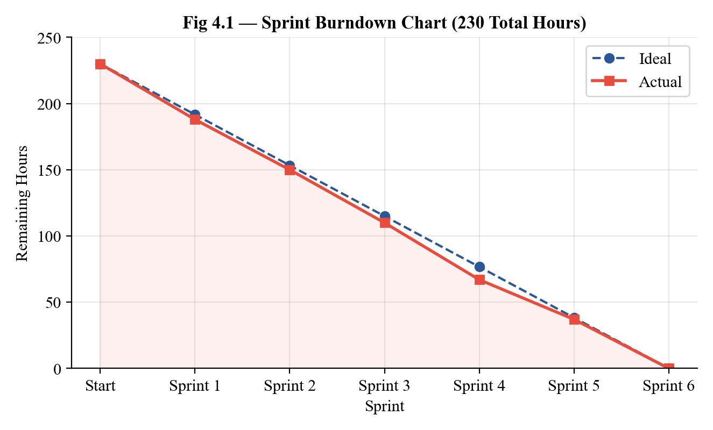
Fig 4.1 — Sprint Burndown Chart (230 Total Hours)
1. AI/ML and Backend Technologies:
| Category | Technology | Version |
|---|---|---|
| ML Framework | PyTorch, Transformers, Accelerate | PyTorch >= 2.1.0, Transformers >= 4.36.0 |
| ASR (Speech-to-Text) | OpenAI Whisper, Meta MMS ASR | Whisper >= 20231117 |
| Translation | AI4Bharat IndicTrans2, SentencePiece | IndicTransToolkit latest |
| LLM (Conversational AI) | Qwen 2.5 Instruct, llama.cpp | Qwen 0.5B-7B, llama-cpp-python >= 0.2.0 |
| TTS (Text-to-Speech) | Meta MMS-TTS, Cartesia API | VitsModel, Cartesia >= 1.0.0 |
| Agent Framework | LangGraph, LangChain | LangGraph >= 0.0.20, LangChain >= 0.1.0 |
| Web Framework | FastAPI, Uvicorn, WebSockets | FastAPI >= 0.108.0, Uvicorn >= 0.25.0 |
| Database | SQLite (WAL mode) | Built-in Python sqlite3 |
| Audio Processing | noisereduce, soundfile, librosa | noisereduce >= 3.0.0 |
| Web Search | DuckDuckGo Search (ddgs) | ddgs >= 9.0.0 |
| Pipeline | Pipecat AI | pipecat-ai >= 0.0.30 |
2. Frontend Technologies:
| Category | Technology | Version |
|---|---|---|
| Frontend Framework | React, TypeScript | React 18, TypeScript 5.x |
| Build Tool | Vite | Vite 5.x |
| UI Components | Radix UI, Tailwind CSS | Latest stable |
| State Management | React Context + Hooks | Built-in React 18 |
| API Client | Fetch API, WebSocket | Native browser APIs |
3. DevOps and Quality Tools:
| Purpose | Tool | Version |
|---|---|---|
| Version Control | Git, GitHub | Latest stable |
| Code Editor | Visual Studio Code, Cursor | Latest stable |
| Code Formatter | Black | >= 23.12.0 |
| Linter | Ruff | >= 0.1.9 |
| Testing | pytest, pytest-asyncio, httpx | pytest >= 7.4.0 |
| Containerization | Docker, Docker Compose | Latest stable |
| Package Manager | pip (Python), npm (Node.js) | Latest stable |
| Edge Runtime | llama.cpp, ONNX Runtime | llama-cpp-python >= 0.2.0 |
| Module Name | Description |
|---|---|
| ASR Module (src/asr/) | Handles automatic speech recognition for 11 Indian languages. Supports multiple backends: Meta MMS ASR 1B (primary, optimized for Indian languages), OpenAI Whisper (fallback, multilingual), and Pingala ASR (low-latency). Includes audio denoising via noisereduce and automatic language detection. |
| Translation Module (src/translation/) | Provides bidirectional Indian language ↔ English translation using AI4Bharat IndicTrans2. Supports both full (1B parameter) and distilled (211M parameter, 5x smaller) model variants. Language-specific tokenization via SentencePiece. Handles 11 language pairs. |
| LLM Module (src/llm/) | Local conversational AI using Qwen 2.5 Instruct models (0.5B-7B variants). Supports both native Transformers inference and llama.cpp backend for quantized GGUF models. Features conversation memory, system prompt customization, and thinking extraction for reasoning models. |
| TTS Module (src/tts/) | Text-to-speech synthesis for all supported languages. Backends include Meta MMS-TTS (offline, all languages), Cartesia API (online, high quality), AI4Bharat Indic Parler TTS (emotion control), and Chatterbox TTS. Supports audio format conversion and response caching. |
| Agent Orchestrator (src/agents/) | LangGraph-based multi-agent system. Intent classification via keyword matching routes queries to: Info Agent (DuckDuckGo search + LLM synthesis), Task Agent (SQLite persistence for reminders/alarms), Chat Agent (general conversation). Features fallback responses and reasoning leak detection. |
| Pipeline Module (src/pipeline/) | End-to-end voice processing orchestrator. Legacy sequential pipeline and modern Pipecat streaming pipeline with custom processors. Provides detailed timing metrics, lazy component loading, and text-only mode for testing. |
| API Module (src/api/) | FastAPI server with REST endpoints (transcribe, process, text, tts, health, dashboard) and WebSocket streaming (/ws, /ws/stream). Includes CORS middleware, static file serving for the React dashboard, and comprehensive request/response logging. |
| Database Module (src/db/) | SQLite database layer with WAL mode for concurrent access. Manages conversations, messages, tasks, and system metrics. Dataclass-based models with automatic schema migration. |
| Cache Module (src/cache/) | LRU response caching with configurable TTL for translations, TTS outputs, and LLM responses. Reduces computation for frequently repeated phrases and improves response time. |
| Edge Module (src/edge/) | Raspberry Pi 5 client with async HTTP/WebSocket communication, audio input/output handling via sounddevice/pyaudio, and XiaoZhi protocol support for device pairing. |
I. Python Conventions
snake_case (e.g., whisper_asr.py, indictrans.py, agent_factory.py)UpperCamelCase (e.g., QwenLLM, IndicTranslator, AgentOrchestrator)snake_case (e.g., transcribe_audio, classify_intent, model_size)SCREAMING_SNAKE_CASE (e.g., DEFAULT_SYSTEM_PROMPT, MODEL_VARIANTS, LANG_CODES)async/await for non-blocking I/O. Background tasks use asyncio for concurrent model loading.II. Module and Component Design
load_model() for initialization, a primary processing method (e.g., transcribe(), translate(), chat(), synthesize()), and resource cleanup.III. Formatting and Linting (Managed by Tools)
black src/ tests/ and ruff check src/ tests/IV. TypeScript/React Conventions (Frontend Dashboard)
UpperCamelCase (e.g., ConversationViewer, LatencyChart, HealthStatus)kebab-case for component files (organized in frontend/src/components/)useHealth, useConversations)V. Error Handling and Observability
VI. Documentation
docs/scrum/The core API server that orchestrates all voice assistant operations (src/api/main.py)
"""Voice Assistant API Server - Main Application."""
import logging
import time
import tempfile
import os
from pathlib import Path
from contextlib import asynccontextmanager
from fastapi import FastAPI, UploadFile, File, Form, WebSocket, Query, HTTPException
from fastapi.middleware.cors import CORSMiddleware
from fastapi.responses import FileResponse, JSONResponse
from fastapi.staticfiles import StaticFiles
from src.config import load_config
logger = logging.getLogger(__name__)
# ── Global state ──────────────────────────────────────────────────
asr_engine = None
tts_engine = None
llm_engine = None
translator = None
orchestrator = None
db = None
cfg = None
@asynccontextmanager
async def lifespan(app: FastAPI):
"""Application startup/shutdown lifecycle."""
global asr_engine, tts_engine, llm_engine, translator, orchestrator, db, cfg
cfg = load_config()
logger.info("Loading AI models...")
# Initialize database
from src.db.database import Database
db = Database()
# Load ASR engine
if cfg.asr.engine == "mms":
from src.asr.mms_asr import MMSASR
asr_engine = MMSASR(device=cfg.asr.device)
else:
from src.asr.whisper_asr import WhisperASR
asr_engine = WhisperASR(model_size=cfg.asr.model_size, device=cfg.asr.device)
# Load Translation engine
from src.translation.indictrans import IndicTranslator
translator = IndicTranslator(model_variant=cfg.translation.model_variant,
device=cfg.translation.device)
# Load LLM engine
if cfg.llm.engine == "qwen3":
from src.llm.qwen3 import Qwen3LLM
llm_engine = Qwen3LLM(model_size=cfg.llm.model_size, device=cfg.llm.device)
else:
from src.llm.qwen import QwenLLM
llm_engine = QwenLLM(model_size=cfg.llm.model_size, device=cfg.llm.device)
# Load TTS engine
from src.tts.mms_tts import MMSTTS
tts_engine = MMSTTS()
# Initialize agent orchestrator
from src.agents.orchestrator import AgentOrchestrator
orchestrator = AgentOrchestrator(llm=llm_engine, db=db)
logger.info("All models loaded successfully!")
yield
logger.info("Shutting down...")
app = FastAPI(title="Voice Assistant API", version="0.2.0", lifespan=lifespan)
# CORS for dashboard
app.add_middleware(CORSMiddleware, allow_origins=["*"],
allow_methods=["*"], allow_headers=["*"])
REST endpoints for voice processing (src/api/main.py continued)
@app.get("/health")
async def health_check():
"""System health with component status."""
return {
"status": "healthy",
"version": "0.2.0",
"components": {
"asr": {"status": "loaded", "engine": cfg.asr.engine},
"tts": {"status": "loaded", "engine": cfg.tts.engine},
"llm": {"status": "loaded", "engine": cfg.llm.engine,
"model_size": cfg.llm.model_size},
"translation": {"status": "loaded", "variant": cfg.translation.model_variant},
"orchestrator": {"status": "loaded", "type": cfg.agents.orchestrator},
"database": {"status": "connected"},
}
}
@app.post("/api/transcribe")
async def transcribe(audio: UploadFile = File(...),
language: str = Form("ml")):
"""Transcribe audio to text."""
start = time.time()
with tempfile.NamedTemporaryFile(suffix=".wav", delete=False) as tmp:
content = await audio.read()
tmp.write(content)
tmp_path = tmp.name
try:
result = asr_engine.transcribe(tmp_path, language=language)
elapsed_ms = (time.time() - start) * 1000
return {"text": result["text"], "language": language,
"confidence": result.get("confidence", 0.0),
"asr_time_ms": round(elapsed_ms, 1)}
finally:
os.unlink(tmp_path)
@app.post("/api/text")
async def process_text(text: str = Form(...),
language: str = Form("en")):
"""Process text input through the full pipeline (skip ASR)."""
start = time.time()
timings = {}
# Translate to English if needed
english_text = text
if language != "en" and translator:
t0 = time.time()
english_text = translator.translate(text, source_lang=language,
target_lang="en")
timings["translation_in_ms"] = round((time.time() - t0) * 1000, 1)
# Process through agent orchestrator
t0 = time.time()
agent_result = orchestrator.process(english_text)
timings["llm_ms"] = round((time.time() - t0) * 1000, 1)
# Translate response back
response_text = agent_result.get("response", "")
if language != "en" and translator:
t0 = time.time()
response_text = translator.translate(response_text,
source_lang="en",
target_lang=language)
timings["translation_out_ms"] = round((time.time() - t0) * 1000, 1)
total_ms = round((time.time() - start) * 1000, 1)
# Log to database
if db:
db.log_conversation(language=language, intent=agent_result.get("intent"),
asr_time_ms=0, llm_time_ms=timings.get("llm_ms", 0),
total_time_ms=total_ms,
user_message=text, assistant_message=response_text)
return {"input": text, "intent": agent_result.get("intent", "unknown"),
"response": response_text, "agent": agent_result.get("agent", "chat"),
"language": language, "total_ms": total_ms, **timings}
Intelligent query routing with specialized agents (src/agents/orchestrator.py)
"""LangGraph-based Agent Orchestrator for voice assistant."""
import logging
import re
from typing import Optional, Dict, Any
from dataclasses import dataclass
logger = logging.getLogger(__name__)
try:
from langgraph.graph import StateGraph, END
HAS_LANGGRAPH = True
except ImportError:
HAS_LANGGRAPH = False
logger.warning("LangGraph not installed — using fallback orchestrator")
@dataclass
class AgentState:
"""State passed through the LangGraph workflow."""
user_input: str = ""
intent: str = "unknown"
agent: str = "chat"
response: str = ""
sources: list = None
thinking: str = ""
context: dict = None
class AgentOrchestrator:
"""LangGraph-based multi-agent orchestrator."""
# Intent classification patterns
INTENT_PATTERNS = {
"task": r"\b(remind|schedule|alarm|timer|set a|set an|to.?do|task)\b",
"smart_home": r"\b(light|fan|ac|door|temperature|turn on|turn off)\b",
"chat": r"\b(hello|hi|hey|thanks?|bye|good morning|good night)\b",
"info": r"\b(what|who|where|when|how|why|weather|price|recommend|tell me)\b",
}
def __init__(self, llm=None, db=None):
self.llm = llm
self.db = db
self._fallback_counter = 0
if HAS_LANGGRAPH:
self.graph = self._build_graph()
else:
self.graph = None
def classify_intent(self, text: str) -> str:
"""Classify user intent using keyword/regex matching."""
text_lower = text.lower().strip()
for intent, pattern in self.INTENT_PATTERNS.items():
if re.search(pattern, text_lower):
return intent
return "info" # Default to info queries
def _build_graph(self):
"""Build LangGraph StateGraph workflow."""
workflow = StateGraph(AgentState)
workflow.add_node("classify", self._classify_node)
workflow.add_node("info_agent", self._info_agent_node)
workflow.add_node("task_agent", self._task_agent_node)
workflow.add_node("chat_agent", self._chat_agent_node)
workflow.add_node("respond", self._respond_node)
workflow.set_entry_point("classify")
workflow.add_conditional_edges("classify", self._route_agent,
{"info": "info_agent", "task": "task_agent", "chat": "chat_agent"})
for agent in ["info_agent", "task_agent", "chat_agent"]:
workflow.add_edge(agent, "respond")
workflow.add_edge("respond", END)
return workflow.compile()
Specialized agent implementations (src/agents/orchestrator.py continued)
def _info_agent_node(self, state: AgentState) -> AgentState:
"""Info agent: web search + LLM synthesis."""
search_results = []
try:
from duckduckgo_search import DDGS
with DDGS() as ddgs:
results = list(ddgs.text(state.user_input, max_results=3))
search_results = [{"title": r["title"], "body": r["body"],
"url": r["href"]} for r in results]
except Exception as e:
logger.warning(f"Web search failed: {e}")
# Build prompt with search context
context = "\n".join(f"- {r['title']}: {r['body']}" for r in search_results)
prompt = f"""Based on these search results:
{context}
Answer the user's question: {state.user_input}
Respond in 1-3 concise sentences suitable for voice output."""
if self.llm:
response = self.llm.chat(prompt)
state.response = self._strip_thinking(response.content)
else:
state.response = self._get_fallback("info")
state.sources = search_results
state.agent = "info"
return state
def _task_agent_node(self, state: AgentState) -> AgentState:
"""Task agent: create and manage reminders/tasks."""
if self.llm:
prompt = f"User wants to set a task/reminder: {state.user_input}\n"
prompt += "Confirm the task and respond naturally in 1-2 sentences."
response = self.llm.chat(prompt)
state.response = self._strip_thinking(response.content)
else:
state.response = self._get_fallback("task")
# Extract and persist task
task_title = self._extract_task_title(state.user_input)
if self.db and task_title:
self.db.create_task(title=task_title, source_input=state.user_input)
logger.info(f"Task created: {task_title}")
state.agent = "task"
return state
def _chat_agent_node(self, state: AgentState) -> AgentState:
"""Chat agent: general conversation."""
if self.llm:
prompt = f"{state.user_input}\nRespond naturally in 1-3 sentences."
response = self.llm.chat(prompt)
state.response = self._strip_thinking(response.content)
else:
state.response = self._get_fallback("chat")
state.agent = "chat"
return state
def _strip_thinking(self, text: str) -> str:
"""Remove <think>...</think> blocks from Qwen3 output."""
return re.sub(r".*? ", "", text, flags=re.DOTALL).strip()
def process(self, text: str) -> Dict[str, Any]:
"""Process user input through the agent workflow."""
if self.graph:
state = AgentState(user_input=text)
result = self.graph.invoke(state)
return {"response": result.response, "intent": result.intent,
"agent": result.agent, "sources": result.sources}
else:
return self._fallback_process(text)
Bidirectional Indian language translation (src/translation/indictrans.py)
"""IndicTrans2 Translation Module
Supports both full (1B) and distilled (~211M) model variants."""
import logging
from typing import Optional, Literal
logger = logging.getLogger(__name__)
try:
from IndicTransToolkit import IndicProcessor
except ImportError:
IndicProcessor = None
class IndicTranslator:
"""AI4Bharat IndicTrans2 translator for Indian languages."""
MODEL_VARIANTS = {
"full": {
"en-indic": "ai4bharat/indictrans2-en-indic-1B",
"indic-en": "ai4bharat/indictrans2-indic-en-1B",
},
"dist": {
"en-indic": "ai4bharat/indictrans2-en-indic-dist-200M",
"indic-en": "ai4bharat/indictrans2-indic-en-dist-200M",
"indic-indic": "ai4bharat/indictrans2-indic-indic-dist-320M",
},
}
LANG_CODES = {
"ml": "mal_Mlym", # Malayalam
"hi": "hin_Deva", # Hindi
"ta": "tam_Taml", # Tamil
"te": "tel_Telu", # Telugu
"bn": "ben_Beng", # Bengali
"mr": "mar_Deva", # Marathi
"gu": "guj_Gujr", # Gujarati
"kn": "kan_Knda", # Kannada
"pa": "pan_Guru", # Punjabi
"ur": "urd_Arab", # Urdu
"en": "eng_Latn", # English
}
def __init__(self, model_variant="dist", device="cuda"):
self.variant = model_variant
self.device = device
self.models = {} # Lazy-loaded per direction
self.processor = None
def _load_model(self, direction: str):
"""Load translation model for given direction."""
from transformers import AutoModelForSeq2SeqLM, AutoTokenizer
model_id = self.MODEL_VARIANTS[self.variant][direction]
logger.info(f"Loading IndicTrans2 {direction}: {model_id}")
tokenizer = AutoTokenizer.from_pretrained(model_id, trust_remote_code=True)
model = AutoModelForSeq2SeqLM.from_pretrained(model_id,
trust_remote_code=True).to(self.device)
self.models[direction] = (model, tokenizer)
if not self.processor:
self.processor = IndicProcessor(inference=True)
def translate(self, text: str, source_lang: str = "ml",
target_lang: str = "en") -> str:
"""Translate text between languages."""
src_code = self.LANG_CODES.get(source_lang)
tgt_code = self.LANG_CODES.get(target_lang)
if source_lang == "en":
direction = "en-indic"
elif target_lang == "en":
direction = "indic-en"
else:
direction = "indic-indic"
if direction not in self.models:
self._load_model(direction)
model, tokenizer = self.models[direction]
batch = self.processor.preprocess_batch([text], src_lang=src_code,
tgt_lang=tgt_code)
inputs = tokenizer(batch, return_tensors="pt", padding=True).to(self.device)
with torch.no_grad():
outputs = model.generate(**inputs, max_new_tokens=256)
decoded = tokenizer.batch_decode(outputs, skip_special_tokens=True)
result = self.processor.postprocess_batch(decoded, lang=tgt_code)
return result[0]
Local conversational AI with multiple model sizes (src/llm/qwen.py)
"""Qwen 2.5 LLM Module — Local conversational AI."""
import logging
from typing import Optional, List, Dict, Literal
from dataclasses import dataclass, field
logger = logging.getLogger(__name__)
@dataclass
class Message:
"""Chat message."""
role: Literal["system", "user", "assistant"]
content: str
@dataclass
class ChatResponse:
"""Response from chat completion."""
content: str
tokens_used: int
generation_time_ms: float
class QwenLLM:
"""Qwen 2.5 Instruct LLM for conversational AI.
Sizes available:
- 0.5B: ~1GB VRAM (good for Pi with quantization)
- 1.5B: ~3GB VRAM (balanced)
- 3B: ~6GB VRAM (better quality)
- 7B: ~14GB VRAM (best local quality)
"""
MODELS = {
"0.5b": "Qwen/Qwen2.5-0.5B-Instruct",
"1.5b": "Qwen/Qwen2.5-1.5B-Instruct",
"3b": "Qwen/Qwen2.5-3B-Instruct",
"7b": "Qwen/Qwen2.5-7B-Instruct",
}
DEFAULT_SYSTEM_PROMPT = (
"You are a helpful voice assistant. Provide concise, friendly "
"responses suitable for spoken conversation. Keep responses "
"brief — typically 1-3 sentences unless more detail is needed."
)
def __init__(self, model_size="1.5b", device="cuda",
system_prompt=None, max_memory_messages=10):
self.model_size = model_size
self.device = device
self.system_prompt = system_prompt or self.DEFAULT_SYSTEM_PROMPT
self.max_memory = max_memory_messages
self.history: List[Message] = []
self.model = None
self.tokenizer = None
def load_model(self):
"""Load model and tokenizer from HuggingFace."""
from transformers import AutoModelForCausalLM, AutoTokenizer
model_id = self.MODELS[self.model_size]
logger.info(f"Loading {model_id} on {self.device}...")
self.tokenizer = AutoTokenizer.from_pretrained(model_id)
self.model = AutoModelForCausalLM.from_pretrained(
model_id, torch_dtype="auto", device_map=self.device)
def chat(self, user_message: str) -> ChatResponse:
"""Generate a response to user message with conversation memory."""
import time, torch
if not self.model:
self.load_model()
self.history.append(Message(role="user", content=user_message))
messages = [{"role": "system", "content": self.system_prompt}]
messages += [{"role": m.role, "content": m.content}
for m in self.history[-self.max_memory:]]
text = self.tokenizer.apply_chat_template(messages, tokenize=False,
add_generation_prompt=True)
inputs = self.tokenizer(text, return_tensors="pt").to(self.device)
t0 = time.time()
with torch.no_grad():
outputs = self.model.generate(**inputs, max_new_tokens=256,
temperature=0.7, do_sample=True)
gen_time = (time.time() - t0) * 1000
response_text = self.tokenizer.decode(
outputs[0][inputs.input_ids.shape[-1]:], skip_special_tokens=True)
self.history.append(Message(role="assistant", content=response_text))
return ChatResponse(content=response_text,
tokens_used=outputs.shape[-1], generation_time_ms=gen_time)
Speech-to-text with multilingual support (src/asr/whisper_asr.py)
"""OpenAI Whisper ASR Module — Multilingual speech recognition."""
import logging
from typing import Optional, Dict, Any
logger = logging.getLogger(__name__)
class WhisperASR:
"""Whisper-based ASR with Indian language support.
Model sizes: tiny (39M), base (74M), small (244M),
medium (769M), large-v3 (1.5B)
"""
LANGUAGE_MAP = {
"ml": "Malayalam", "hi": "Hindi", "ta": "Tamil",
"te": "Telugu", "bn": "Bengali", "mr": "Marathi",
"gu": "Gujarati", "kn": "Kannada", "pa": "Punjabi",
"ur": "Urdu", "en": "English",
}
def __init__(self, model_size="small", device="cuda"):
self.model_size = model_size
self.device = device
self.model = None
def load_model(self):
"""Load Whisper model."""
import whisper
logger.info(f"Loading Whisper {self.model_size} on {self.device}...")
self.model = whisper.load_model(self.model_size, device=self.device)
def transcribe(self, audio_path: str, language: Optional[str] = None,
**kwargs) -> Dict[str, Any]:
"""Transcribe audio file to text."""
if not self.model:
self.load_model()
options = {"fp16": self.device == "cuda"}
if language:
options["language"] = self.LANGUAGE_MAP.get(language, language)
result = self.model.transcribe(audio_path, **options, **kwargs)
return {
"text": result["text"].strip(),
"language": result.get("language", language),
"segments": result.get("segments", []),
"confidence": 1.0 - (result.get("no_speech_prob", 0) or 0),
}
Multilingual speech synthesis (src/tts/mms_tts.py)
"""Meta MMS-TTS Module — Text-to-speech for Indian languages."""
import logging
import numpy as np
from typing import Optional
logger = logging.getLogger(__name__)
class MMSTTS:
"""Meta Massively Multilingual Speech TTS.
Supports 1000+ languages including all major Indian languages."""
LANG_MAP = {
"ml": "mal", "hi": "hin", "ta": "tam", "te": "tel",
"bn": "ben", "mr": "mar", "gu": "guj", "kn": "kan",
"pa": "pan", "ur": "urd", "en": "eng",
}
def __init__(self):
self.models = {} # Cache per language
def _load_model(self, lang_code: str):
"""Load TTS model for specific language."""
from transformers import VitsModel, AutoTokenizer
mms_code = self.LANG_MAP.get(lang_code, lang_code)
model_id = f"facebook/mms-tts-{mms_code}"
logger.info(f"Loading MMS-TTS: {model_id}")
model = VitsModel.from_pretrained(model_id)
tokenizer = AutoTokenizer.from_pretrained(model_id)
self.models[lang_code] = (model, tokenizer)
def synthesize(self, text: str, language: str = "ml") -> np.ndarray:
"""Synthesize text to audio waveform."""
import torch
if language not in self.models:
self._load_model(language)
model, tokenizer = self.models[language]
inputs = tokenizer(text, return_tensors="pt")
with torch.no_grad():
output = model(**inputs)
waveform = output.waveform[0].numpy()
return waveform
End-to-end voice processing with timing metrics (src/pipeline/orchestrator.py)
"""Voice Pipeline Orchestrator — End-to-end processing."""
import time
import logging
from dataclasses import dataclass, field
from typing import Optional
logger = logging.getLogger(__name__)
@dataclass
class PipelineResult:
"""Result from pipeline processing."""
success: bool = True
error: str = ""
# Text at each stage
transcription: str = ""
english_text: str = ""
intent: str = "unknown"
english_response: str = ""
translated_response: str = ""
# Timing (ms)
asr_time_ms: float = 0
translation_in_ms: float = 0
intent_time_ms: float = 0
llm_time_ms: float = 0
translation_out_ms: float = 0
tts_time_ms: float = 0
total_time_ms: float = 0
# Audio output
audio_output: Optional[any] = None
class VoiceAssistantPipeline:
"""Orchestrates the full voice processing pipeline."""
def __init__(self, asr=None, translator=None, llm=None,
tts=None, orchestrator=None):
self.asr = asr
self.translator = translator
self.llm = llm
self.tts = tts
self.orchestrator = orchestrator
def process_audio(self, audio_path: str,
language: str = "ml") -> PipelineResult:
"""Process audio through the full pipeline."""
result = PipelineResult()
total_start = time.time()
try:
# 1. ASR
t0 = time.time()
asr_result = self.asr.transcribe(audio_path, language=language)
result.transcription = asr_result["text"]
result.asr_time_ms = (time.time() - t0) * 1000
# 2. Translation (source -> EN)
if language != "en" and self.translator:
t0 = time.time()
result.english_text = self.translator.translate(
result.transcription, source_lang=language, target_lang="en")
result.translation_in_ms = (time.time() - t0) * 1000
else:
result.english_text = result.transcription
# 3. Agent Processing
t0 = time.time()
agent_result = self.orchestrator.process(result.english_text)
result.english_response = agent_result["response"]
result.intent = agent_result.get("intent", "unknown")
result.llm_time_ms = (time.time() - t0) * 1000
# 4. Translation (EN -> source)
if language != "en" and self.translator:
t0 = time.time()
result.translated_response = self.translator.translate(
result.english_response, source_lang="en",
target_lang=language)
result.translation_out_ms = (time.time() - t0) * 1000
else:
result.translated_response = result.english_response
# 5. TTS
t0 = time.time()
result.audio_output = self.tts.synthesize(
result.translated_response, language=language)
result.tts_time_ms = (time.time() - t0) * 1000
except Exception as e:
result.success = False
result.error = str(e)
logger.error(f"Pipeline error: {e}")
result.total_time_ms = (time.time() - total_start) * 1000
return result
Real-time monitoring and conversation management (src/api/main.py)
@app.get("/api/dashboard/stats")
async def dashboard_stats():
"""Dashboard statistics."""
stats = db.get_stats() if db else {}
return {
"total_conversations": stats.get("total_conversations", 0),
"avg_latency_ms": round(stats.get("avg_latency_ms", 0), 1),
"languages": stats.get("language_distribution", {}),
"intents": stats.get("intent_distribution", {}),
"recent_conversations": stats.get("recent_count", 0),
}
@app.get("/api/dashboard/conversations")
async def list_conversations(limit: int = Query(30, ge=1, le=100),
offset: int = Query(0, ge=0)):
"""List recent conversations with pagination."""
conversations = db.get_conversations(limit=limit, offset=offset) if db else []
total = db.count_conversations() if db else 0
return {"conversations": conversations, "total": total}
@app.get("/api/tasks")
async def list_tasks(status: Optional[str] = Query(None)):
"""List tasks with optional status filter."""
tasks = db.get_tasks(status=status) if db else []
return {"tasks": tasks}
@app.patch("/api/tasks/{task_id}")
async def update_task(task_id: int, status: str = Form(...)):
"""Update task status (pending/done)."""
if db:
db.update_task(task_id, status=status)
return {"ok": True, "id": task_id, "status": status}
@app.delete("/api/tasks/{task_id}")
async def delete_task(task_id: int):
"""Delete a task."""
if db:
db.delete_task(task_id)
return {"ok": True, "id": task_id}
Real-time audio processing via WebSocket (src/api/main.py)
@app.websocket("/ws/stream")
async def websocket_stream(websocket: WebSocket):
"""Full streaming pipeline via WebSocket."""
await websocket.accept()
logger.info("WebSocket stream connected")
try:
while True:
data = await websocket.receive_bytes()
# Save to temp file for ASR
with tempfile.NamedTemporaryFile(suffix=".wav", delete=False) as tmp:
tmp.write(data)
tmp_path = tmp.name
try:
# Transcribe
asr_result = asr_engine.transcribe(tmp_path)
transcription = asr_result["text"]
# Process through agent
agent_result = orchestrator.process(transcription)
await websocket.send_json({
"type": "response",
"transcription": transcription,
"response": agent_result["response"],
"intent": agent_result.get("intent", "unknown"),
})
finally:
os.unlink(tmp_path)
except Exception as e:
logger.info(f"WebSocket disconnected: {e}")
YAML-based configuration with typed dataclasses (config/settings.yaml + src/config.py)
# config/settings.yaml — Main application configuration
app:
name: "Hyper-Localized Voice Assistant"
version: "0.2.0"
debug: true
asr:
engine: "mms" # mms | whisper | pingala | indic_whisper
model_size: "small" # tiny | small | medium | large-v3
device: "cuda" # cuda | cpu
tts:
engine: "mms" # mms | cartesia | indic_parler | chatterbox
default_language: "ml"
supported_languages: [ml, hi, ta, te, bn, mr, gu, kn, en]
translation:
engine: "indictrans2"
model_variant: "dist" # full (1B) | dist (211M, 5x smaller)
source_lang: "ml"
target_lang: "en"
device: "cuda"
llm:
engine: "qwen3" # qwen | qwen3
model_size: "0.6b" # 0.5b | 0.6b | 1.5b | 3b | 7b
backend: "llamacpp" # transformers | llamacpp
max_new_tokens: 256
temperature: 0.7
llamacpp:
n_ctx: 2048
n_gpu_layers: -1 # All layers to GPU
agents:
orchestrator: "langgraph"
available_agents: [info_agent, task_agent, chat_agent]
cache:
enabled: true
max_size: 500
ttl_seconds: 3600
server:
host: "0.0.0.0"
port: 8000
Data models for persistence (src/db/models.py)
"""Database models for the voice assistant."""
from dataclasses import dataclass, field
from datetime import datetime
from typing import Optional, List
@dataclass
class Conversation:
id: Optional[int] = None
session_id: str = ""
language: str = "ml"
intent: str = "unknown"
asr_time_ms: float = 0
translation_time_ms: float = 0
llm_time_ms: float = 0
tts_time_ms: float = 0
total_time_ms: float = 0
created_at: Optional[datetime] = None
messages: List["Message"] = field(default_factory=list)
@dataclass
class Message:
id: Optional[int] = None
conversation_id: int = 0
role: str = "user" # user | assistant
content: str = ""
language: str = "ml"
timestamp: Optional[datetime] = None
@dataclass
class Task:
id: Optional[int] = None
title: str = ""
status: str = "pending" # pending | done
created_at: Optional[datetime] = None
completed_at: Optional[datetime] = None
source_input: str = ""
Frontend dashboard entry point (frontend/src/App.tsx — excerpt)
import { useState, useEffect } from 'react';
import { Tabs, TabsList, TabsTrigger, TabsContent } from './components/ui/tabs';
import { ConversationViewer } from './components/conversations/ConversationViewer';
import { HealthStatus } from './components/health/HealthStatus';
import { LatencyChart } from './components/latency/LatencyChart';
import { StatsCards } from './components/stats/StatsCards';
import { TryItPanel } from './components/tryit/TryItPanel';
import { TaskList } from './components/tasks/TaskList';
import { LanguageSelector } from './components/languages/LanguageSelector';
import { ThemeProvider } from './context/ThemeContext';
function App() {
const [health, setHealth] = useState(null);
const [stats, setStats] = useState(null);
useEffect(() => {
// Fetch health and stats on mount
fetch('/health').then(r => r.json()).then(setHealth);
fetch('/api/dashboard/stats').then(r => r.json()).then(setStats);
// Poll every 10 seconds
const interval = setInterval(() => {
fetch('/health').then(r => r.json()).then(setHealth);
fetch('/api/dashboard/stats').then(r => r.json()).then(setStats);
}, 10000);
return () => clearInterval(interval);
}, []);
return (
<ThemeProvider>
<div className="min-h-screen bg-background">
<header className="border-b px-6 py-3 flex items-center">
<h1 className="text-xl font-bold">Voice Assistant Dashboard</h1>
<LanguageSelector />
</header>
<main className="p-6">
<StatsCards stats={stats} />
<Tabs defaultValue="conversations">
<TabsList>
<TabsTrigger value="conversations">Conversations</TabsTrigger>
<TabsTrigger value="health">Health</TabsTrigger>
<TabsTrigger value="tryit">Try It</TabsTrigger>
<TabsTrigger value="tasks">Tasks</TabsTrigger>
</TabsList>
<TabsContent value="conversations">
<ConversationViewer />
<LatencyChart />
</TabsContent>
<TabsContent value="health">
<HealthStatus health={health} />
</TabsContent>
<TabsContent value="tryit">
<TryItPanel />
</TabsContent>
<TabsContent value="tasks">
<TaskList />
</TabsContent>
</Tabs>
</main>
</div>
</ThemeProvider>
);
}
export default App;
The project employs a comprehensive testing strategy using pytest with async support (pytest-asyncio) and httpx for API testing. Tests are organized by module and cover initialization, API endpoints, database operations, caching, and integration scenarios.
Test Suite Overview:
| Test File | Module | Test Count | Description |
|---|---|---|---|
| test_api.py | API Layer | 12 | FastAPI endpoints, health check, dashboard, task CRUD |
| test_basic.py | Core Components | 8 | ASR initialization (Whisper, MMS), TTS initialization (MMS, Indic) |
| test_cache.py | Cache | 6 | Response caching, TTL expiration, LRU eviction |
| test_database.py | Database | 10 | SQLite operations, conversation logging, task persistence |
| test_integration.py | Pipeline | 5 | End-to-end pipeline tests (ASR → Translation → LLM → TTS) |
| test_new_modules.py | Recent Modules | 4 | Optimization, inference engine tests |
| test_optimization.py | Edge | 3 | Model quantization, ONNX conversion |
Sample Test Cases:
"""Test API endpoints (tests/test_api.py)."""
import pytest
from httpx import AsyncClient, ASGITransport
from src.api.main import app
@pytest.fixture
async def client():
transport = ASGITransport(app=app)
async with AsyncClient(transport=transport, base_url="http://test") as c:
yield c
@pytest.mark.asyncio
async def test_health_endpoint(client):
"""Health endpoint returns system status."""
response = await client.get("/health")
assert response.status_code == 200
data = response.json()
assert data["status"] == "healthy"
assert "components" in data
assert "asr" in data["components"]
assert "llm" in data["components"]
@pytest.mark.asyncio
async def test_text_processing(client):
"""Text endpoint processes input through pipeline."""
response = await client.post("/api/text",
data={"text": "What is the weather today?", "language": "en"})
assert response.status_code == 200
data = response.json()
assert "response" in data
assert "intent" in data
assert data["intent"] in ["info", "task", "chat", "unknown"]
@pytest.mark.asyncio
async def test_dashboard_stats(client):
"""Dashboard stats endpoint returns analytics."""
response = await client.get("/api/dashboard/stats")
assert response.status_code == 200
data = response.json()
assert "total_conversations" in data
assert "avg_latency_ms" in data
@pytest.mark.asyncio
async def test_task_crud(client):
"""Task creation and management."""
# Create task via text endpoint
response = await client.post("/api/text",
data={"text": "Remind me to buy groceries", "language": "en"})
assert response.status_code == 200
# List tasks
response = await client.get("/api/tasks")
assert response.status_code == 200
tasks = response.json()["tasks"]
assert isinstance(tasks, list)
"""Test database operations (tests/test_database.py)."""
import pytest
from src.db.database import Database
@pytest.fixture
def db(tmp_path):
return Database(db_path=str(tmp_path / "test.db"))
def test_create_conversation(db):
"""Conversations are persisted correctly."""
conv_id = db.log_conversation(
language="ml", intent="info",
asr_time_ms=120.5, llm_time_ms=350.2, total_time_ms=680.7,
user_message="What is the weather?",
assistant_message="The weather is sunny today.")
assert conv_id is not None
conv = db.get_conversation(conv_id)
assert conv["language"] == "ml"
assert conv["intent"] == "info"
def test_create_task(db):
"""Tasks are created and retrievable."""
db.create_task(title="Buy groceries", source_input="Remind me to buy groceries")
tasks = db.get_tasks(status="pending")
assert len(tasks) == 1
assert tasks[0]["title"] == "Buy groceries"
def test_update_task_status(db):
"""Task status can be updated."""
db.create_task(title="Test task")
tasks = db.get_tasks(status="pending")
task_id = tasks[0]["id"]
db.update_task(task_id, status="done")
done_tasks = db.get_tasks(status="done")
assert len(done_tasks) == 1
"""Test cache module (tests/test_cache.py)."""
from src.cache.response_cache import ResponseCache
def test_cache_hit():
"""Cached responses are returned on repeat queries."""
cache = ResponseCache(max_size=10, ttl_seconds=60)
cache.set("hello_ml_tts", b"audio_data_bytes")
assert cache.get("hello_ml_tts") == b"audio_data_bytes"
def test_cache_ttl_expiration():
"""Expired entries are not returned."""
cache = ResponseCache(max_size=10, ttl_seconds=0) # Instant expiry
cache.set("key", "value")
import time; time.sleep(0.01)
assert cache.get("key") is None
def test_lru_eviction():
"""LRU eviction when cache is full."""
cache = ResponseCache(max_size=2, ttl_seconds=60)
cache.set("a", "1")
cache.set("b", "2")
cache.set("c", "3") # Should evict "a"
assert cache.get("a") is None
assert cache.get("c") == "3"
Running Tests:
# Run all tests
pytest tests/ -v
# Run with coverage report
pytest tests/ --cov=src --cov-report=html
# Run specific test module
pytest tests/test_api.py -v
# Run single test
pytest tests/test_database.py::test_create_task -v
The implementation follows an incremental delivery model aligned with the Scrum sprint structure. Each sprint delivers a working increment that builds upon previous work, with continuous integration testing at each stage.
I. Infrastructure Setup and Backend Development
python -m venv venv. Install all dependencies from requirements.txt (PyTorch, Transformers, FastAPI, LangGraph, etc.).src/ with subdirectories per module (asr, tts, translation, llm, agents, pipeline, api, db, edge, cache). Each module has __init__.py for clean imports.settings.yaml) and edge (edge_profile.yaml).II. AI/ML Pipeline Development
III. Agent System Development
IV. Frontend and Dashboard Development
/. Assets in src/api/static/.V. Testing and Quality Assurance
VI. Edge Deployment and Docker
config/edge_profile.yaml with reduced context window (1024), CPU-only inference, minimal language set (ML, HI, EN), and aggressive caching.# Edge deployment on Raspberry Pi 5
cd voice-assistant
python -m venv venv && source venv/bin/activate
pip install -r requirements.txt
# Download quantized models
python -c "from src.llm.qwen3 import Qwen3LLM; Qwen3LLM(model_size='0.6b')"
# Run with edge profile
CONFIG_PROFILE=edge uvicorn src.api.main:app --host 0.0.0.0 --port 8000
# Or via Docker
docker-compose up -d
Deliverables: Deliverables align with the sprint schedule and backlog items. The implementation covers all 8 epics: Speech Recognition (E1), Translation (E2), Conversational AI (E3), Speech Synthesis (E4), Pipeline Integration (E5), Agent Framework (E6), Edge Deployment (E7), and DevOps & Testing (E8). Total implementation spans 114 story points across 6 sprints.
The Hyper-Localized Multilingual Voice Assistant represents a strategic technology solution focused on digital inclusion, cost efficiency, and scalable deployment for linguistically diverse communities.
I. Digital Inclusion and Revenue Growth
II. Cost Reduction and Efficiency
III. Privacy and Compliance
IV. Scalability and Market Potential
Strategic Outcomes:
The Hyper-Localized Multilingual Voice Assistant establishes a foundation for significant enhancements across model quality, user experience, platform capabilities, and deployment scale.
I. Advanced User Experience Features
II. Model and Pipeline Improvements
III. Platform Expansion
IV. Operational and Enterprise Features
V. Advanced Agent Capabilities
VI. Scalability and Deployment
Sprint 1 — Research, Setup & Core PoCs
src/, tests/, config/, docs/, scripts/Sprint 2 — Translation & LLM Integration
Sprint 3 — Full Pipeline & API Development
Sprint 4 — Agent Framework
Sprint 5 — Edge Deployment & Optimization
Sprint 6 — Testing, Documentation & Release
Dashboard — Full Page View
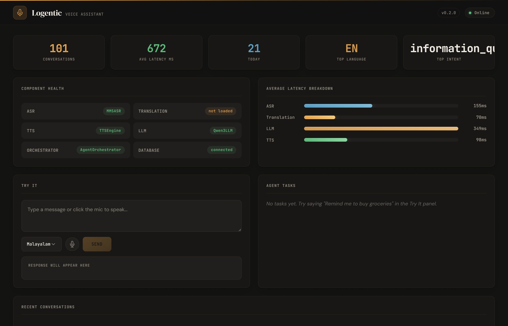
Dashboard — Conversation History & Agent Routing
Dashboard — Mobile / Narrow Viewport
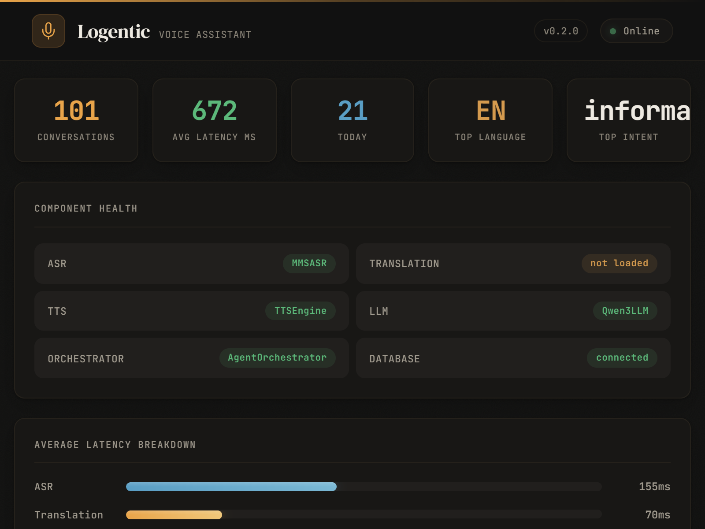
Dashboard — Bottom Section (Try-It & Conversations)
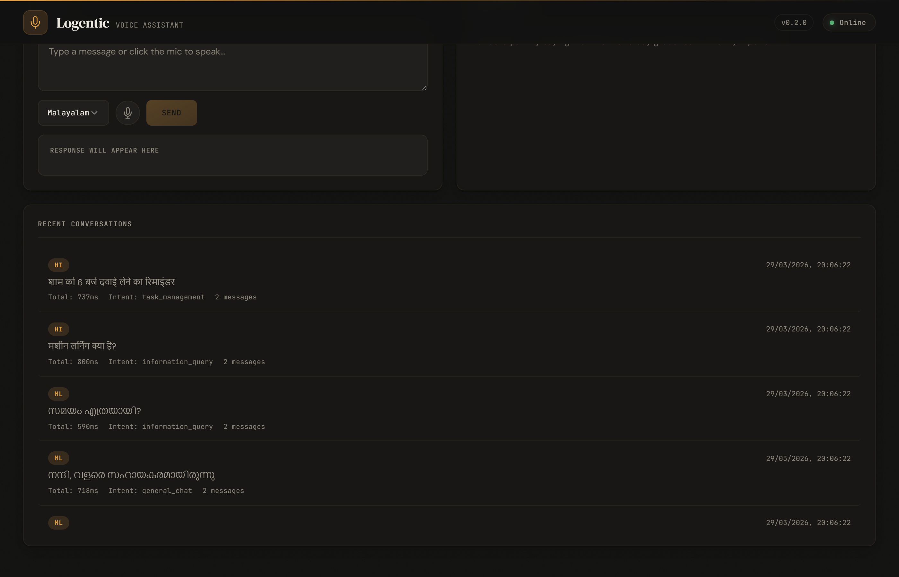
Language Support Distribution
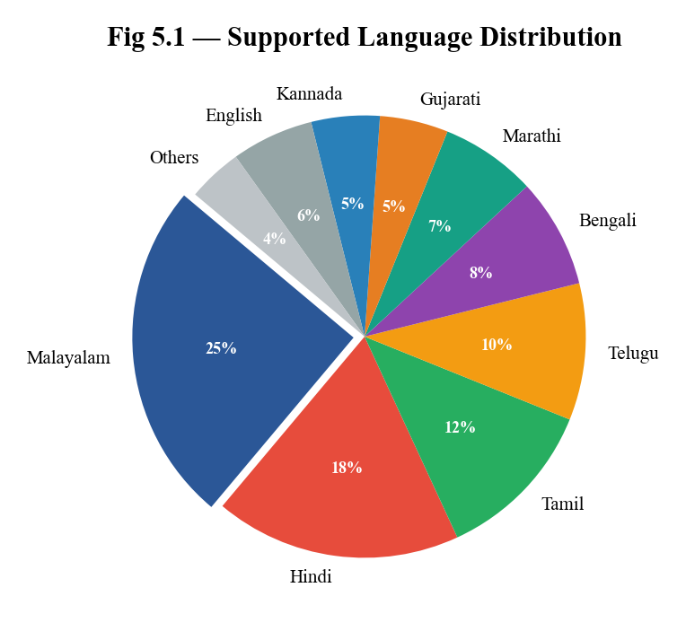
Component Latency Breakdown
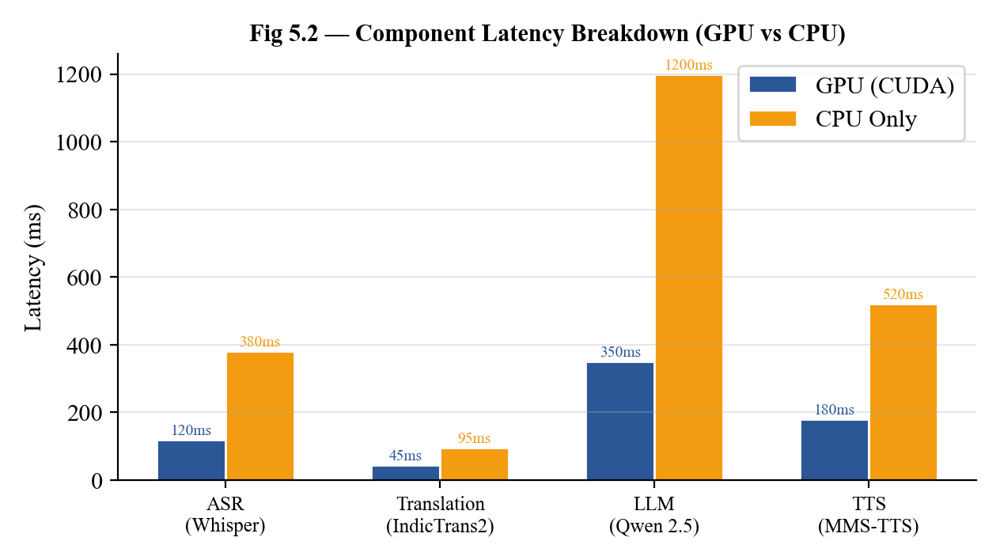
Model Memory Footprint
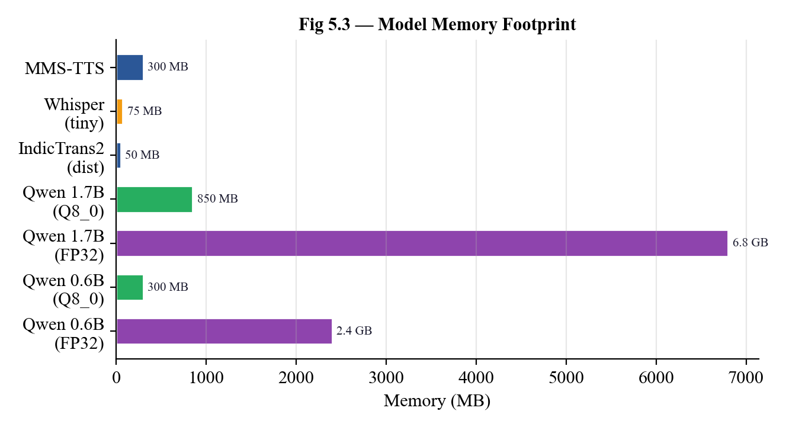
Fig 11.1 — Overall Sprint Burndown Chart
Books and Articles
Research Papers
Online Documentation
Technical Standards and Guidelines
Community Resources